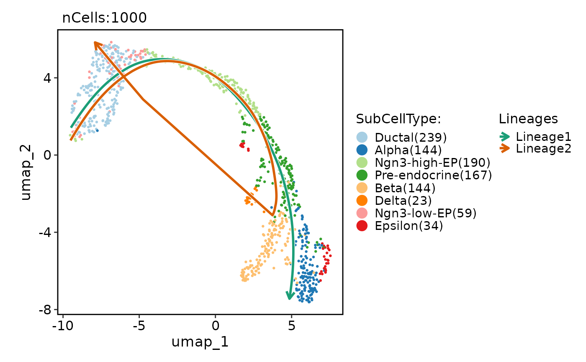
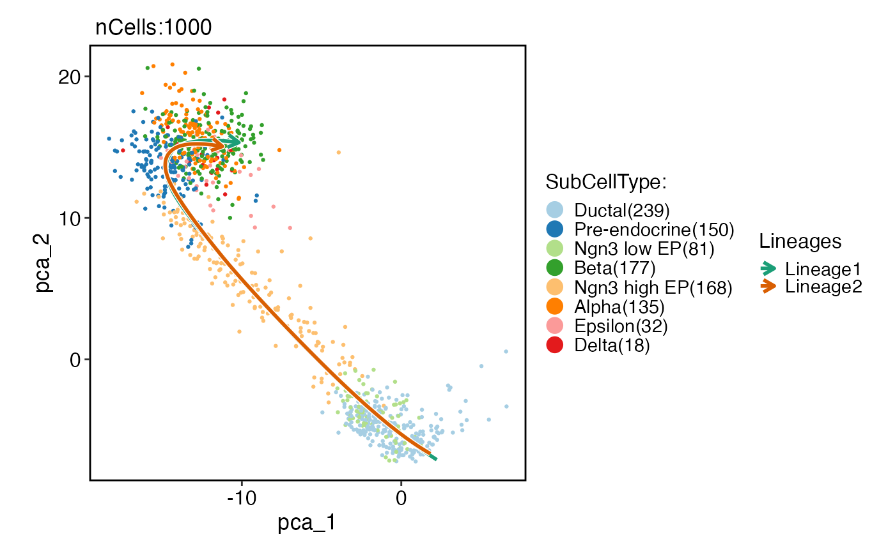
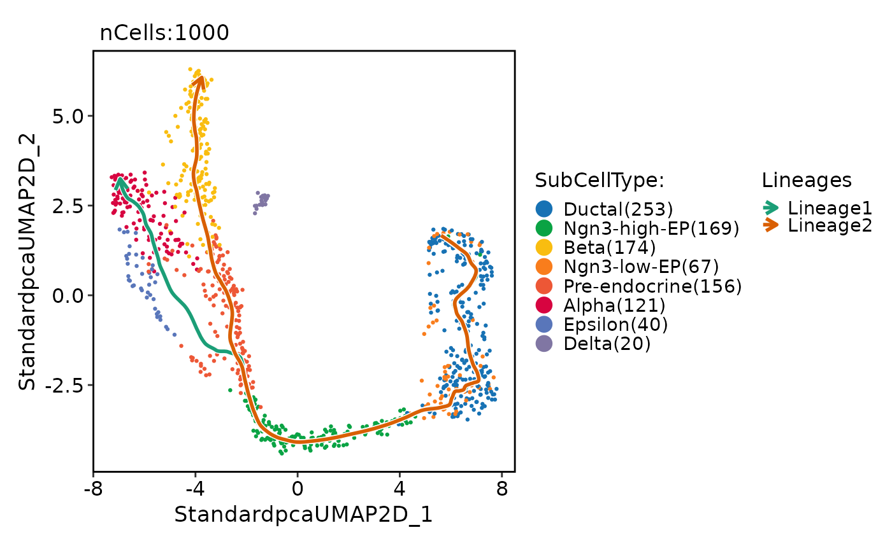
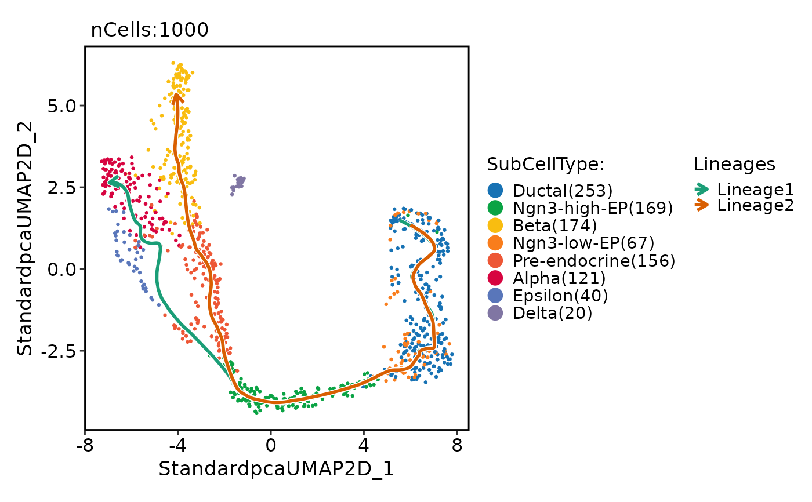

Runs the Slingshot algorithm on a Seurat object.
Usage
RunSlingshot(
srt,
group.by,
reduction = NULL,
dims = NULL,
start = NULL,
end = NULL,
prefix = NULL,
reverse = FALSE,
align_start = FALSE,
show_plot = TRUE,
lineage_palette = "Dark2",
seed = 11,
...
)Arguments
- srt
A Seurat object.
- group.by
The variable to group the cells by.
- reduction
The reduction technique to use for dimensionality reduction. Default is NULL, which uses the default reduction for the Seurat object.
- dims
The dimensions to use for the Slingshot algorithm. Default is NULL, which uses first two dimensions.
- start
The starting group for the Slingshot algorithm. Default is NULL.
- end
The ending group for the Slingshot algorithm. Default is NULL.
- prefix
The prefix to add to the column names of the resulting pseudotime variable. Default is NULL.
- reverse
Logical value indicating whether to reverse the pseudotime variable. Default is FALSE.
- align_start
Logical value indicating whether to align the starting pseudotime values at the maximum pseudotime. Default is FALSE.
- show_plot
Logical value indicating whether to show the dimensionality plot. Default is TRUE.
- lineage_palette
The color palette to use for the lineages in the plot. Default is "Dark2".
- seed
The random seed to use for reproducibility. Default is 11.
- ...
Additional arguments to be passed to the slingshot::slingshot function.
Examples
data(pancreas_sub)
pancreas_sub <- RunSlingshot(
pancreas_sub,
group.by = "SubCellType",
reduction = "UMAP"
)
#> Warning: No shared levels found between `names(values)` of the manual scale and the
#> data's fill values.
#> Warning: No shared levels found between `names(values)` of the manual scale and the
#> data's fill values.
#> Warning: Removed 2 rows containing missing values or values outside the scale range
#> (`geom_path()`).
#> Warning: Removed 2 rows containing missing values or values outside the scale range
#> (`geom_path()`).
#> Warning: Removed 7 rows containing missing values or values outside the scale range
#> (`geom_path()`).
#> Warning: Removed 7 rows containing missing values or values outside the scale range
#> (`geom_path()`).

pancreas_sub <- RunSlingshot(
pancreas_sub,
group.by = "SubCellType",
reduction = "PCA",
dims = 1:10
)
#> Warning: No shared levels found between `names(values)` of the manual scale and the
#> data's fill values.
#> Warning: No shared levels found between `names(values)` of the manual scale and the
#> data's fill values.

CellDimPlot(
pancreas_sub,
group.by = "SubCellType",
reduction = "UMAP",
lineages = paste0("Lineage", 1:2),
lineages_span = 0.1
)
#> Warning: No shared levels found between `names(values)` of the manual scale and the
#> data's fill values.
#> Warning: No shared levels found between `names(values)` of the manual scale and the
#> data's fill values.

# 3D lineage
pancreas_sub <- standard_scop(pancreas_sub)
#> ℹ [2025-08-25 06:52:39] Start scop standard workflow...
#> ℹ [2025-08-25 06:52:39] Checking srt_list...
#> ℹ [2025-08-25 06:52:40] Data is log-normalized
#> ℹ [2025-08-25 06:52:40] Data 1/1 of the `srt_list` has been log-normalized
#> ℹ [2025-08-25 06:52:40] Perform `Seurat::FindVariableFeatures()` on the data 1/1 of the `srt_list`...
#> ℹ [2025-08-25 06:52:40] Use the separate HVF from srt_list
#> ℹ [2025-08-25 06:52:40] Number of available HVF: 2000
#> ℹ [2025-08-25 06:52:40] Finished checking.
#> ℹ [2025-08-25 06:52:40] Perform `Seurat::ScaleData()` on the data...
#> ℹ [2025-08-25 06:52:41] Perform pca linear dimension reduction on the data...
#> ℹ [2025-08-25 06:52:41] `linear_reduction` pca is already existed. Skip calculation
#> ℹ [2025-08-25 06:52:41] Perform `Seurat::FindClusters()` with louvain and `cluster_resolution` = 0.6 on the data...
#> ℹ [2025-08-25 06:52:41] Reorder clusters...
#> ! [2025-08-25 06:52:41] Using `Seurat::AggregateExpression()` to calculate pseudo-bulk data for <Assay5>
#> ℹ [2025-08-25 06:52:41] Perform umap nonlinear dimension reduction on the data...
#> ℹ [2025-08-25 06:52:41] Non-linear dimensionality reduction (umap) using (Standardpca) dims (1-50) as input
#> ℹ [2025-08-25 06:52:46] Non-linear dimensionality reduction (umap) using (Standardpca) dims (1-50) as input
#> ✔ [2025-08-25 06:52:51] Run scop standard workflow done
pancreas_sub <- RunSlingshot(
pancreas_sub,
group.by = "SubCellType",
reduction = "StandardpcaUMAP3D"
)
CellDimPlot(
pancreas_sub,
group.by = "SubCellType",
reduction = "UMAP",
lineages = paste0("Lineage", 1:2),
lineages_span = 0.1,
lineages_trim = c(0.05, 0.95)
)
#> Warning: No shared levels found between `names(values)` of the manual scale and the
#> data's fill values.
#> Warning: No shared levels found between `names(values)` of the manual scale and the
#> data's fill values.
